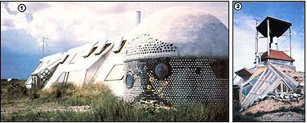

Regular readers of this magazine will likely rememberMike Reynolds. He's the innovative architect in Taos, New Mexico who's devoted to constructing houses from natural (and not-so-natural) materials.
Mike, you see, is partial to earth . . . sun . . . wind . . . and junk (like old tires and tin cans). He also appreciates the beauty of vigas (sturdy beams made from thick tree trunks). The architect believes that - with the right "formula" - such diverse and readily available materials can be combined to form energy-efficient dwellings that won't lay waste to either the resources and beauty of the earth or the utility budgets of their owners!
For the past ten years Mike has followed his theories, and built solar houses on commission and speculation. But most of the one-family dwellings have been large, custom-built homes in the $50,000 to $100,000 price range . . . and thus not within the financial reach of a lot of folks, including many members of his own crew. With this in mind, he decided to work out a design that would better fit the needs of "Everyman". And one way to approach that goal, Reynolds concluded, would be to design fuel-efficient, inexpensive, multiple-unit rental buildings.
GOING THROUGH PHASES
Mike's first design for this purpose - which he called Phase I - is a passive solar, earthsheltered house that features (along with the tire and can walls he favors) an integral greenhouse on the south side. It also contains a communal living area, kitchen, and bathroom . . . plus three tire-encircled bedrooms - each with its own sleeping loft - and a can-walled dome. Furthermore, the greenhouse is lined with planting beds in which the tenants can grow their own vegetables and flowers . . . and makes use of a wall of water tanks for thermal mass. The innovative dwelling is finished with a curving tin roof. All in all, the 2,500-square-foot Phase I (which now provides low-cost rental space for a few of the workers and houses the company's office) cost around $50,000 to build.
The second rental project - Phase II - was also designed as a multiple-unit building, but it incorporates a more extensive passive solar system than did the first. The greenhouse is larger - it actually encloses the living room, kitchen, and bath - so the entire southern wall is effectively a collector, allowing the warmth to flow through and heat the floors and the walls of the structure.
Just off the greenhouse area (and dug into the earth) are three double-walled domes that serve as separate bedrooms, each containing about 200 square feet of floor space. And most of Phase II's entire 1,000-square-foot structure is at least partially buried for natural insulation (the dome bedrooms remain at about 65°F year round . . . without any backup source of heating or cooling).
Both Phase I and Phase II are located on a splendid mesa, west of Taos. And as you'd imagine, Michael's had no trouble renting the individual units to his workers at the bargain rate of $125 a month.
A "BUG" HOUSE
Not one to repeat himself in his work, Reynolds usually designs a new structure, builds it, and then dismisses it . . . moving on to yet another concept (although each new plan is likely inspired, in part, by the preceding one). Mike found that Phase II stuck in his head, though. It seemed to him that if he could make an energy-efficient dwelling that three people could afford to rent, he could surely go one step further and come up with a similar solar home that folks with limited funds could afford to buy. However, in order to do so, he realized that he'd first have to get together with a finance office and figure out some (low-cost) alternative to can-and-tire construction that loan agencies would accept.
Before long, Mike had worked up a plan for a small earth shelter that the FmHA approved, even though the house was to be solar-heated (with a woodstove for backup) and 75% earth-sheltered. He named his newest brainchild the "Volkshome" . . . after the Volkswagen "bug" that has provided a means of low-cost transportation for so many people.
Although they can be modified to almost any size, most Volkshomes (Reynolds has built seven of them so far) have about 1,000 square feet of usable space and are made of earth, wood, and pumice blocks. They're dug into the ground on two levels - one 40 inches higher than the other - and incorporate a south-facing solar collection wall and an interior water-tank wall (which divides the upper sleeping space from the lower living area). Glazing installed above the tanks provides a view of the mesa and allows light to filter through to the bedrooms. (Despite the fact that the split-level plan increased construction expenses, it does allow for much better heat circulation and airflow than would a single-floor design.)
VOLKS FOLKS
Well, the Volkshomes were so appealing that Michael's own foreman, Joe Hoar (a single parent with an elderly mother who sometimes stays with him), bought one! Of course, being a junk-mason from way back, Joe added some of his own touches to the construction . . . including a tin-can stairway. (He also put fireplaces in the bedrooms because, he says, he'd rather watch a fire than a television set!)
And now that Joe's lived in his home for two years, he's a real advocate of this sort of housing. "During all that time," he claims, "we've been trying to figure out ways to improve our Volkshome . . . and we can't think of a one. It must be just about perfect!"
Hoar has found, for instance, that his house can be easily "operated" - to reach the desired heat level - simply by opening and closing windows and adjusting the awning over the glass wall. Furthermore, he says that the wintertime temperature in the front room reaches a low of about 50°F at dawn, but rises to around 70° by 8:00 a.m. . . . and that the bedrooms remain between 69° and 75° even in the most bitter weather. His monthly utility costs consist of a "whopping" $40 electrical bill . . . and that expense, Joe explains, is mostly due to the fact that he likes to take excessively long, hot baths!
The first Volkshome to be completed cost about $38 a square foot. And now - three years and their attendant inflation later - the structures are running close to $45 per square foot. Perhaps that figure sounds high . . . but when you consider New Mexico's prices and remember that lifetime utility costs for a Volks can range from low to nonexistent, you'll see that the homes are truly bargain dwellings. In fact, Mike's so pleased with the residential "bugs" that he's actually marketing them - through newspaper ads, open houses, and such - which is a first for him.
EARTHLY DWELLINGS
Beyond the Volkshomes on Michael's mesa stands a menagerie of unusual structures. One of these is his own home, and the rest are simply inconclusive experiments.
For example, the first can dome Mike ever created is one of the cluster of buildings. He's recently added a greenhouse to it (to provide solar-generated heat). Then there's a pyramid, built without any steel, which Mike now uses as his own private retreat (when he needs to be alone to play music or just to think).
Reynolds considers his wind-turbine home to be the only truly energy-self-sufficient structure among his creations. He began by supporting his own personally designed turbine on four massive poles. The wind grabber is connected to a generator that - along with two panels of photovoltaic cells - is able to pass electricity into 12 golf cart batteries . . . which, in turn, provide all the electricity for the house.
Then, once the turbine was completed, Mike built tire-and-adobe walls between the poles, leaving the south side open for a greenhouse. The resulting 600-square-foot "windome", notes the designer-builder, "does a whole lot of things at one time: It captures the wind and the sun and turns them into electricity and heat . . . recycles all its own water . . . stays cool in the summer and warm in the winter . . . and allows the owner to grow his or her own food!" And the only utility bill is $20, which is sent to the propane company every three months to keep the home's refrigerator and stove going.
Of course, as is the case with most new designs, the windome does still have some kinks in it. For one thing, the complexity of its operation is such that few people besides Mike could run the house . . . nevertheless, he's justifiably proud of his prototype "wind shelter".
DIGGING IN
Reynolds now wants to provide his wife with her own private place . . . so he's in the process of building a one-big-room-and-bath "Pit House". The 14' X 28' rectangle is dug six feet into the earth, but the south wall is just three feet high and forms bancos (benches) that will become part of the room's furniture. The upper portion of the wall consists of 4' X 6' glass panels that make up a solar collector area and also offer a view. The earthen floors and walls will provide thermal mass, of course, but there's a woodstove, too . . . just in case.
Mike's estimated final cost for the Pit House is about $8,000 . . . but much of that will have gone to pay hired help. Reynolds figures that a couple of hardworking amateurs could complete a similar structure, in about two months' time, for around $3,500 (not including the plumbing).
WHAT'S NEXT
As soon as he completes the Pit, Michael hopes to get back to work on his latest invention . . . called the "Dynosphere". It's a rotating wind turbine . . . which - when it revolves in a high wind atop its 40-foot supports - looks spherical.
On the whole, Michael Reynolds seems to be living his own vision of how an individual should exist. He's doing exactly what he wants to do with his time . . . that is, he's experimenting with natural forces and man-made litter to discover increasingly energy-self-sufficient dwelling designs. And that's certainly not a bad life's work in anybody's book!
|
 JEANNETTE BROWN [1] Mike Reynolds' Phase I (with the can-dome office). [2] The wind turbine house. |
JEANNETTE BROWN Vigas used as beams, in conjunction with smaller limbs, make an interesting ceiling. |
JEANNETTE BROWN Michael's newest experiment is the "Dynosphere," a 40-foot-high wind turbine. |
|
JEANNETTE BROWN [4] The can-decorated stairs . . [5] and a cozy bedroom in Joe Hoar's Volkshome. |
|
|